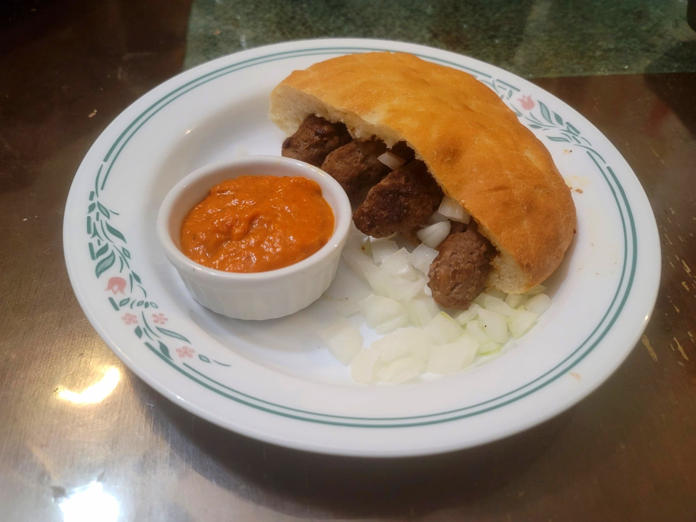

Cevapi

Ingredients:
- 1-1.3 lb Ground beef, 85/15
- 0.5-0.6 lb Ground Pork
- 3 cloves Garlic, minced
- 1 tsp Fine sea salt
- 1 tsp Black pepper
- 1 tsp Paprika
- Optional: 3/4 tsp Baking soda
Instructions:
- Combine all the ingredients. Let marinate in the fridge for at least 1 hour or preferably overnight.
- Shape the meat mixture into small sausages, about the length and width of an index finger.
- Prepare either a grill or a skillet with some olive oil. Cook the sausages for about 4-5 minutes per side or until golden.
- Serve the cevapi immediately with lepinja, ajvar, and raw onions.